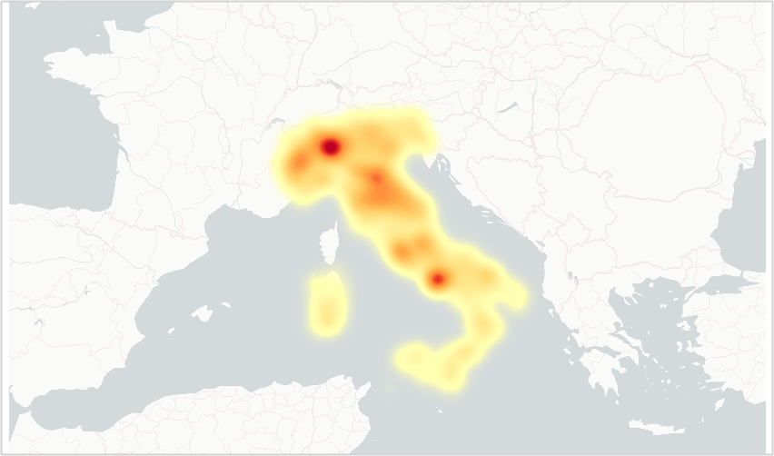

Introduzione
L’ENEA - Agenzia nazionale per le nuove tecnologie, l’energia e lo sviluppo economico sostenibile - ha pubblicato a fine luglio del 2024 il rapporto “La consistenza del parco immobiliare nazionale”.
Per la parte relativa ai fabbricati di proprietà pubblica è stato realizzato con il contributo dei dati forniti dal Dipartimento dell’Economia (DE) – Direzione III Valorizzazione del patrimonio pubblico.
Questo dipartimento infatti gestisce la banca dati degli immobili pubblici, alla quale è associata la pubblicazione dei dati aperti in formato CSV, con licenza CC-BY 4.0:
Elenco dei beni immobili dichiarati dalle Amministrazioni Pubbliche per l’anno 2019, ai sensi dell’art. 2, comma 222, legge 23 dicembre 2009, n. 191
Per ciascuna Amministrazione sono riportate le seguenti informazioni sui beni immobili dichiarati: identificativo univoco del bene (unità immobiliare, u.i.), identificativi catastali (o codice bene nel caso di immobili non accatastati), titolo e quota di proprietà, localizzazione, tipologia immobiliare, dimensione (superficie/cubatura), epoca di costruzione, natura giuridica, vincolo culturale paesaggistico, appartenenza a un compendio, tipo di utilizzo e finalità, indicazione se l’unità immobiliare è data in uso a terzi, totalmente o in parte. Per beni non di proprietà, sono riportati: titolo di detenzione, superficie detenuta (se non si detiene l’intera u.i.), Amministrazione da cui si è ricevuto il bene (Amministrazione cedente). Le informazioni sulle detenzioni a favore di terzi, relative all’intera u.i. o ad una parte, sono contenute nel corrispondente file .csv Detenzioni a favore di terzi.
“In considerazione dell’elevato numero di record” - circa 2,8 milioni - il Dipartimento ha suddiviso la pubblicazione di questi dati in circa 30 file CSV compressi (zip). Per fortuna tutti con un solo schema.
In questo articolo voglio mostrare come metterli insieme, in modo da poter fare elaborazioni e sintesi come quelle dell’ENEA. Tenuti compressi, separati e in questo formato, non sono infatti molto comodi da gestire.
Ancora una volta duckdb è uno strumento può essere uno strumento utile per fare questo (si veda l’articolo “Gestire file CSV grandi, brutti e cattivi”).
Ancora volta una sarà l’occasione - lo farò in rappresentanza dell’associazione onData - di proporre al Dipartimento di pubblicare i dati anche in altre modalità. E magari andrà bene, così come è avvenuto con OpenCoesione.
Prima di passare all’“azione”, una nota sulla sottostante Figura 1. Si tratta di una mappa che rappresenta la densità degli immobili pubblici in Italia, una cosiddetta heatmap: le aree più scure indicano una maggiore densità di immobili.
Nella brillante vignetta di xkcd, viene mostrato come le heatmap siano spesso inutili perché, in sostanza, riflettono la distribuzione della popolazione: le “cose” si trovano dove ci sono le persone.
Anche in questo caso è così, ma si notano colori insolitamente tenui anche in alcune aree densamente popolate del Sud Italia. Tuttavia, questa è un’analisi che spetterà a qualche altra persona.

Scaricare i file
L’ho fatto in blocco. Ho prima esplorato un po’ la pagina e ho notato che tutti i file hanno un URL che inizia con la stringa /modules e termina per .zip. Allora ho iniziato dall’estrarre la lista di questi file, usando l’espressione regolare /modules.+.zip:
URL="https://www.de.mef.gov.it/it/attivita_istituzionali/patrimonio_pubblico/censimento_immobili_pubblici/open_data_immobili/dati_immobili_2019.html"
curl -s -b "$folder"/tmp/cookies.txt -H 'User-Agent: Mozilla/5.0 (Windows NT 10.0; Win64; x64) AppleWebKit/537.36 (KHTML, like Gecko) Chrome/128.0.0.0 Safari/537.36' "$URL" | grep -P -o '/modules.+.zip'
Nota
- è necessario generare prima il file
cookies.txtcon il comandocurl -c "$folder"/tmp/cookies.txt "$URL"e poi leggerlo; grep -P -oè per usare le espressioni regolari Perl ed estrarre solo la parte che interessa;$folderè la mia cartella di lavoro dello script;
In output si ottiene (ne metto soltanto una piccola parte):
/modules/documenti_it/attivo_patrimonio/2019/open_data_imm/Imm_Camere_di_commercio_ed_Unioni_di_Camere_di_Commercio_2019.zip
/modules/documenti_it/attivo_patrimonio/2019/open_data_imm/Imm_Province_e_Citta_Metropolitane_2019.zip
/modules/documenti_it/attivo_patrimonio/2019/open_data_imm/Imm_Enti_Locali_del_Servizio_Sanitario_Nazionale_2019.zip
/modules/documenti_it/attivo_patrimonio/2019/open_data_imm/Imm_Amministrazioni_Regionali_2019.zip
/modules/documenti_it/attivo_patrimonio/2019/open_data_imm/Imm_Universita_2019.zip
/modules/documenti_it/attivo_patrimonio/2019/open_data_imm/Imm_Amministrazioni_Comunali_ABRUZZO_2019.zip
/modules/documenti_it/attivo_patrimonio/2019/open_data_imm/Imm_Amministrazioni_Comunali_BASILICATA_2019.zipCon la lista degli URL dei file disponibile, basta generare un while loop per scaricarli tutti (sempre con curl o wget).
Elaborazione dei file scaricati
A partire dalla lista dei file zip scaricati, ancora una volta si può generare un while loop per estrarli tutti in una cartella temporanea.
Avviso
Facendolo è emerso un primo piccolo problema: uno dei file zip ha una struttura diversa: contiene il CSV in una sotto cartella. Quindi era necessario creare un processo di unzip automatico che non tenesse della eventuale struttura a cartelle presente.
find "$folder"/../data/raw -type f -name "*.zip" | while IFS= read -r file; do
unzip -j "$file" -d "$folder"/../data/raw
doneUna volta estratti tutti i file e in presenza di uno schema dati comune, è molto semplice creare un unico file di output, usando duckdb.
Il comando di base è:
CSV a partire da una cartella che li contiene.
duckdb --csv -c "SELECT * FROM read_csv_auto('$folder/../data/raw/*.csv')" >output.csvAl primo tentativo però duckdb è andato in errore, per ragioni legate all’encoding dei caratteri dei file CSV, perché DuckDB supporta solo file CSV con encoding UTF-8.
Ma qual è l’encoding dei file CSV dell’Elenco dei beni immobili dichiarati dalle Amministrazioni Pubbliche? Purtroppo sul sito del Dipartimento non c’è traccia di questa informazione.
Nelle linee guida open data dell’Agenzia per l’Italia Digitale (AgID) è riportato:
è sempre necessario utilizzare una codifica standardizzata dei caratteri. In genere, UTF-8 è la codifica utilizzata nel web. È utile, in ogni caso, indicare qual è la codifica dei caratteri utilizzata.
In assenza dell’informazione si può provare a estrarre l’encoding facendo inferenza dai dati. Io in questi casi uso l’ottimo chardet, che per questi file ha dato come risultato la codifica Windows-1252.
Mappata la codifica di input li ho convertiti in UTF-8 con iconv:
iconv -f Windows-1252 -t UTF-8 input.csv >output.csvCon la conversione di encoding fatta, si può lanciare il comando visibile in Lista 1 e ottenere il file output.csv con tutti i dati “uniti”.
Ma sono righe per colonne, ovvero di celle ed è meglio comprimere l’output, così come consigliato qui.
Si può modificare il comando di Lista 1 in questo modo:
duckdb -c "COPY (SELECT * FROM read_csv_auto('$folder/../data/raw/*.csv'))
TO 'beni_immobili_pubblici.csv.gz'"In 20 secondi si ottiene un file CSV compresso di circa 68 MB. Non è un formato comodo per rapide elaborazioni, ma con gli strumenti giusti può sempre sorprendere.
Il summarize di duckdb viene eseguito ad esempio in 2 secondi, con una comodissima sintesi su di celle. Il file csv.gz di output è disponibile qui.
{kind=link}
summarize duckdb
Per altri tipi di query, i tempi sarebbero molto più lunghi.
Se si vuole conciliare un’ottima compressione, con una grande velocità di interrogazione e analisi dei dati, si può scegliere come formato di output il Parquet.
Il comando per creare un file in questo formato è molto simile a quello per il CSV:
duckdb -c "COPY (
SELECT
*
FROM
read_csv_auto('$folder/../data/raw/*.csv')
) TO 'beni_immobili_pubblici.parquet'
(
FORMAT PARQUET,
COMPRESSION 'zstd',
ROW_GROUP_SIZE 100_000
)"In circa 25 secondi si ha in output un file Parquet di circa 55 MB, che si può interrogare molto rapidamente con tanti strumenti ed essenzialmente da tutti i linguaggi di programmazione; su questo Davide Taibi e io abbiamo scritto un articolo di approfondimento.
Creato il file Parquet, ho iniziato a fare le prime query e subito mi hanno dato fastidio tre cose:
- i nomi delle colonne sono troppo human readable, con spazi, caratteri speciali e mescola di maiuscole e minuscole;
- alcuni campi numerici, come
superficieecubaturadei beni, sono definiti come stringhe; - si perde la traccia dei file di origine.
Per il punto 1, c’è l’eccezionale parametro normalize_names, che se impostato a TRUE converte i nome delle colonne in snake_case, con tutte le lettere minuscole, gli spazi sostituiti da _ e con rimossi i caratteri speciali.
Per il punto 2, si possono forzare i tipi di campo (parametro types) e il separatore dei decimali (parametro decimal_separator che per questi file di input è la ,).
Nota bene
Nella prossima versione di duckdb, basterà dichiarare che il separatore decimale sia la virgola e duckdb sarà in grado di inferire correttamente i tipi campo FLOAT; non sarà più necessario dichiararlo esplicitamente per ognuno.
Per il punto 3 si può usare il parametro filename, che se impostato a TRUE aggiunge una colonna con il nome del file di origine.
Mettendo tutto insieme, il comando per creare un file Parquet diventa:
Parquet.
duckdb --csv -c "COPY (
SELECT
* REPLACE (regexp_replace(filename, '^.+/', '') AS filename)
FROM
read_csv_auto(
'$folder/../data/raw/*.csv',
filename = TRUE,
types = { 'id_bene': 'VARCHAR',
'id_compendio': 'VARCHAR',
'latitudine': 'FLOAT',
'longitudine': 'FLOAT',
'superficie_mq': 'FLOAT',
'cubatura_mc': 'FLOAT',
'sup_aree_pertinenziali_mq': 'FLOAT',
'superficie_di_riferimento_mq': 'FLOAT' },
normalize_names = TRUE,
decimal_separator = ','
)
) TO 'beni_immobili_pubblici.parquet' (
FORMAT PARQUET,
COMPRESSION 'zstd',
ROW_GROUP_SIZE 100_000
)"Nella Lista 2 è stato aggiunto il comando REPLACE (regexp_replace(filename, '^.+/', '') AS filename). Questo comando rimuove il percorso del file e lascia solo il suo nome.
Il file parquet di output è disponibile qui.
Analisi geografica dei dati
Il 99% dei dati è associato a una coppia di coordinate geografiche, con le colonne latitudine e longitudine. Non entro qui nel merito sulla qualità (tutta da verificare) di questi dati, ma voglio mostrare come può esser comodo anche in questo caso duckdb.
Questa applicazione ha infatti anche l’estensione spaziale ed è quindi possibile fare delle interrogazioni geografiche.
Quanti sono ad esempio i beni immobili che ricadono in provincia di Bergamo?
Con questa banca dati c’è un modo “tradizionale” per farlo, perché è presente la colonna provincia_del_bene e basta fare una query come quella di sotto, per sapere in 0,1 secondi che sono 39.154:
duckdb -c "SELECT count(*) conteggio
FROM read_parquet('beni_immobili_pubblici.parquet')
WHERE provincia_del_bene = 'BERGAMO'"Ma immaginiamo di non avere la colonna provincia_del_bene e avere soltanto le coordinate dei beni e il poligono che rappresenta la provincia di Bergamo.
Questo poligono si può ottenere in formato geojson dal comodo confini-amministrativi.it e ha questo URL:
https://confini-amministrativi.it/api/v2/it/20240101/unita-territoriali-sovracomunali/16.geo.json
Voglio arricchire il risultato e conteggiare i beni per epoca di costruzione e suddividerli per utilizzo del bene. La query spaziale che in pochi secondi restituisce il risultato è la seguente:
duckdb -c "PIVOT (
SELECT
id_bene,
epoca_costruzione,
utilizzo_del_bene
FROM
'beni_immobili_pubblici.parquet' AS immobili
JOIN ST_READ(
'https://confini-amministrativi.it/api/v2/it/20240101/unita-territoriali-sovracomunali/16.geo.json'
) AS bergamo ON ST_Within(ST_POINT(longitudine, latitudine), bergamo.geom)
) ON utilizzo_del_bene USING COUNT(id_bene)
GROUP BY epoca_costruzione
ORDER BY epoca_costruzione"A partire da un sottoinsieme di colonne - id_bene, epoca_costruzione e utilizzo_del_bene - viene creata una tabella pivot (vedi Tabella 1). Questa organizza i dati in modo che ogni tipologia di utilizzo dei beni (utilizzo_del_bene) diventi una colonna separata. Le celle della tabella mostrano il numero di beni per ciascuna combinazione di epoca di costruzione (epoca_costruzione) e utilizzo, utilizzando la funzione di aggregazione COUNT(id_bene). Infine, i risultati vengono raggruppati per epoca di costruzione e ordinati in base a questa colonna.
| epoca_costruzione | In ristrutturazione/manutenzione | Inutilizzabile | Non utilizzato | Utilizzato direttamente |
|---|---|---|---|---|
| Dal 1919 al 1945 | 20 | 100 | 145 | 637 |
| Dal 1946 al 1960 | 8 | 53 | 83 | 441 |
| Dal 1961 al 1970 | 2 | 26 | 214 | 650 |
| Dal 1971 al 1980 | 8 | 17 | 392 | 685 |
| Dal 1981 al 1990 | 9 | 12 | 190 | 1585 |
| Dal 1991 al 2000 | 4 | 5 | 176 | 1018 |
| Dal 2001 al 2010 | 2 | 7 | 104 | 868 |
| Dopo il 2010 | 1 | 0 | 43 | 195 |
| ND | 0 | 6 | 62 | 469 |
| Prima del 1919 | 20 | 78 | 226 | 993 |
| 15 | 256 | 9294 | 11510 |
È un esempio di base, in cui è evidente come è possibile combinare dati geografici e non, in modo molto semplice e veloce, anche da fonti remote da raggiungere in HTTP.
Nel contesto “spaziale” può essere utile creare un file in formato geografico, da usare su un sistema GIS.
Ad esempio per creare un file in formato FlatGeobuf, progettato per memorizzare dati geografici in modo efficiente e compatto, si può usare una sintassi simile a quella vista sopra:
duckdb -c "COPY (
SELECT
*,
ST_POINT(longitudine, latitudine) geom
FROM
'beni_immobili_pubblici.parquet'
WHERE
longitudine IS NOT NULL
OR latitudine IS NOT NULL
) TO 'output.fgb' WITH (FORMAT GDAL, DRIVER 'FlatGeobuf', SRS 'EPSG:4326')"Il formato parquet ha anche la sua versione geografica, il GeoParquet, molto compresso e molto veloce da interrogare. Per crearlo non si può ancora usare duckdb, ma si può usare il comando ogr2ogr di GDAL:
ogr2ogr -f parquet -lco COMPRESSION=ZSTD beni_immobili_pubblici_geo.parquet output.fgbIl file GeoParquet è disponibile qui, pesa soltanto 80 MB, ed è visualizzabile con QGIS e altre applicazioni GIS.
{kind=link}
GeoParquet visualizzato in QGIS
Alcune considerazioni sui dati
È possibile combinare rapidamente e facilmente questi file per creare una base di dati efficiente e pronta per l’analisi e le interrogazioni. Questo avviene non solo grazie a strumenti come DuckDB, ma anche perché i file di input condividono uno schema unico, che permette di unire i file CSV senza difficoltà.
E come scritto nelle conclusioni di un “famoso” articolo:
Con le dovute precauzioni, con gli strumenti giusti, con un corredo informativo adeguato e per dimensioni non eccessive, (il CSV) può essere un formato comodo e pratico. Descrivendolo, “standardizzandolo” e comprimendolo, diventa molto più usabile.
A proposito di “descrizione”, il Dipartimento dell’Economia pubblica un file dizionario, uno schema, ma soltanto in formato PDF. Quindi non è possibile creare una procedura automatica di importazione dei dati, in cui sono ad esempio impostati correttamente i tipi di campo (testuali, numerici, ecc.).
📌 Importante
La pubblicazione non si dovrebbe limitare a rendere disponibile dei file, ma essere accompagnata da una descrizione del file stesso, leggibile dalle persone e dalle applicazioni.
Sui CSV sarebbe ideale:
- documentare qual è l’encoding dei caratteri;
- avere come encoding l’
UTF-8; - evitare l’utilizzo di spazi, virgolette o altri caratteri speciali nei nomi dei campi;
- dichiarare quali sono i separatori di campo e dei decimali;
- pubblicarli anche non separati in 30 file, ma in unico file compresso
gzip.
Questi preziosi dati inoltre non sono ancora disponibili anche nel portale nazionale dei dati aperti. Ed è un peccato in termini di valorizzazione e diffusione degli stessi. Questo è anche un requisito previsto dalle linee guida nazionali sui dati aperti.
Interrogando la banca dati si ha evidenza di alcuni bene con coordinate geografiche incoerenti con gli attributi territoriali dichiarati in altri campi. Ad esempio il bene con id_bene=2442321, ha coordinate YX 37.926914 e 15.28337, ovvero in provincia di Messina; ma nel campo comune_del_bene il valore è “Frascati”.
Aggiungo una nota anche su un formato aggiuntivo di pubblicazione: il tante volte nominato formato Parquet.
È diventato uno dei formati standard per consentire a chiunque di fare analisi rapide ed efficienti, anche su grandi quantità di dati, quasi su qualsiasi PC. E sarebbe ideale pubblicare la banca dati degli immobili pubblici in formato Parquet.
Un buon esempio da emulare è quello di OpenCoesione - uno dei portali di dati aperti più importanti in Italia - che da febbraio 2024 pubblica anche in questo formato.
Sono dati al 2019, ma sarebbe interessante che fossero aggiornati con una frequenza maggiore, magari annualmente. Sul portale del Tesoso si legge “Fissata al 27 settembre 2024 la chiusura della rilevazione dei dati dei beni immobili pubblici riferiti al 31/12/2023” e quindi c’è da aspettarsi un prossimo aggiornamento.